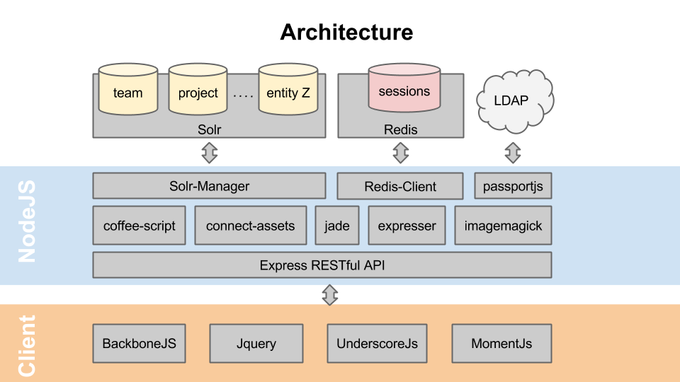

The Cube provides a simple RESTful API. It offers common CRUD functionality like adding, updating or removing items from your collection. It also provides export functionality so that you can see your data in json, xml or csv formats. For more advanced queries than what this API is able to perform, you can always use Solr's API. Just to make things a bit more easy, here is a diagram of the architecture.
Returns all or part of a collection of items from a given entity.
Parameters:
| q | string, default is “*:*” |
| start | number, default is 0 |
| rows | number, or value defined in entity settings or default is 50 |
| sort | property:asc/desc. default is defined in entity settings |
| facet.field | specify a field to include in the faceted response |
| fs | facet filter. Limits the response to only documents matching this field. i.e: &fs=team:Technology &fs=startDate:new &fs=startDate:[2013-01-01T00:00:00.0Z TO *] |
Response: JSON Object
Returns the schema of an entity
Response: JSON Object
Returns the config settings of an entity
Response: JSON Object
Returns the pane.json file of an entity. This file contains data used in a View that opens when a facet filter is selected. Check Team Cube example.
Response: JSON Object
Returns a list of all available facets
Response: JSON Object
Returns all extension templates of an entity
Response: HTML text
Exports an iCal file containig one, a selection of, or all joined events for current user
Parameters:
| selection | string of event IDs concatenated by a pipe '|'. i.e. &selection=id1|id2|id3 |
Response: iCal textfile
Allows a client to upload an image file. Used by the BackboneJs App when adding a new item.
Response: JSON Object
Returns one item based on its ID
Response: JSON Object
Adds an item to the collection in Solr. The body of the request must not have an ID property. This will be generated automatically. Facet fields must be strings or comma separated strings. If a facet field is an array, then it won’t be formatted by the solr manager, allowing a client to make his own formatting. Only fields defined in Schema will be stored.
Body: JSON Object to store
Response: JSON Object
Updates an existing item in Solr. The body of the request must contain all properties of the item. As when adding a new item, all facet fields must be strings or comma separated strings. Arrays won’t be formatted and only fields defined in Schema will be updated.
When authentication is active, an entity is able to validate this request based on the user ID. In example, it can be configured that a user can not change the data of another user, since his user id doesn’t match the item id.
body: JSON Object
Response: JSON Object
Removes an item from the DB.
Response: JSON Object
Modifies the value of a specific property for a given Item. If the field is multiple value (array, facet) the value is added. Otherwise the value is replaced by the one provided. i.e. when a user Joins a en event, her User ID is pushed in the subscription field of that event
Response: JSON Object
Removes a value from a specific property of a given Item. If the field is multiple value then that value is extracted from the array. Otherwise the property is removed completely from the object. i.e. when a user leaves an event.
Response: JSON Object